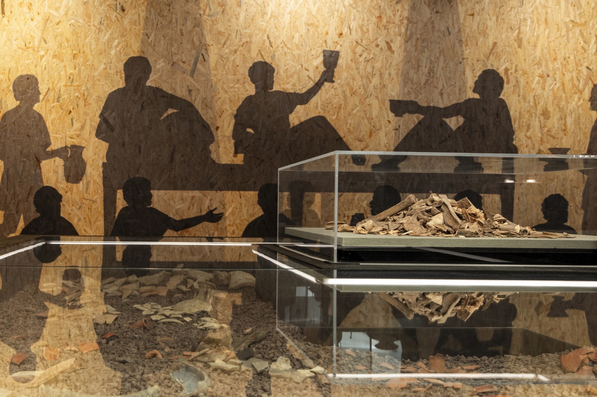

AR wählt pro Seite den Typ: Ausstellung (Tags, Laufzeit automatisch, Ticket-CTA), Event (Tags, Datum automatisch, Ticket-CTA) oder Angebot (nur Tags). Höchstens drei Tags werden gezeigt.
Key Visual pro Ausstellung, Event oder Angebot. Rechts stehen Tags (max. 3), Laufzeit bzw. Datum (automatisch aus den Daten) und der Ticket-CTA, je nach Typ.
| Was | Auslöser | Dauer · Easing |
|---|---|---|
| Bild zoomt 110 % → 100 % und blendet ein | Laden | 1.8 s · AR.ease.out |
| Titel: Zeilen steigen aus der Maske (SplitText) | Laden, +0.25 s, 80 ms gestaffelt | 1.0 s · AR.ease.out |
| Breadcrumbs, Tags, Linie mit Laufzeit, CTA blenden auf | +0.55 s, 70 ms gestaffelt | 0.6 s · AR.ease.out |
| Linie über der Laufzeit zeichnet sich von links (scaleX 0 → 1) | mit dem Block | 0.8 s · AR.ease.out |
| Typwechsel: Inhalt raus (0.15 s), Bild überblendet, neuer Inhalt rein | Typ wechselt | raus 0.15 s · rein 0.3 s / Bild 0.9 s · AR.ease.inOut |
| Bild-Parallax, Inhalt blendet beim Wegscrollen leicht aus | Scroll | scrub: true |
| Reduzierte Bewegung | Nur Überblendungen (Deckkraft), kein Zoom, keine Masken, keine Parallax. | |